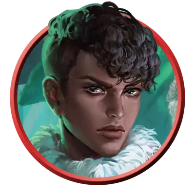

Лори Везермэй-Фоксгроув
Laurie Weathermay-Foxgrove
Средний Гуманоид (Человек), Принципиальный Добрый, именной НИП

Класс Защиты 16 Инициатива +1 (11)
Хиты 65 (10к8 + 20)
Скорость 30 футов
| мод | спас | ||
|---|---|---|---|
| СИЛ | 17 | +3 | +3 |
| ЛОВ | 13 | +1 | +1 |
| ТЕЛ | 15 | +2 | +2 |
| мод | спас | ||
|---|---|---|---|
| ИНТ | 10 | +0 | +0 |
| МДР | 14 | +2 | +2 |
| ХАР | 10 | +0 | +0 |
Чувства пассивное Восприятие 14
Языки Общий, Эльфийский
Опасность 3 (700 опыта; БВ +2)
Действия
Мультиатака. Лори совершает две атаки Флёром или Лёгким арбалетом в любой комбинации.
Флёр (длинный меч). Бросок рукопашной атаки: +6, досягаемость 5 фт. Попадание: 8 (1к8 + 4) Рубящего урона плюс 3 (1к6) урона Излучением.
Лёгкий арбалет. Бросок дальнобойной атаки: +3, дистанция 80/320 фт. Попадание: 10 (2к8 + 1) Колющего урона плюс 3 (1к6) урона Излучением.
Реакции
Отражение удара. Условие: По Лори или видимому ей существу в пределах 5 футов попадает бросок атаки. Эффект: Урон вызвавшей ответ атаки снижается на 5 (1к10).
Бонус мастерства +2
Сёстры Везермэй-Фоксгроув
Отважные исследовательницы паранормального
Сёстры-близнецы Дженнифер и Лори Везермэй-Фоксгроув — охотницы на чудовищ, снискавшие репутацию героинь в домене Мордент, и слава эта расходится далеко за его пределы. Дочери мэра Морденшира, Алисы Везермэй, они часто бывают в семейном поместье — доме Хезер — или у своего названного дяди, доктора Рудольфа ван Рихтена.
В юности Дженнифер и Лори направили своё любопытство и склонность к проказам на разгадку местных тайн. Дядя девочек — прославленный охотник на чудовищ Джордж Везермэй — вернулся в Мордент вместе со своей невестой Натальей Воришковой как раз накануне их шестнадцатого дня рождения. Близняшки разгадали, что Наталья манипулирует их любимым дядей, и в конце концов разоблачили её: она оказалась верволком, использовавшим Джорджа, чтобы подобраться к Рудольфу ван Рихтену. После того как сёстры спасли дядю и доктора от верволчицы, Джордж и Рудольф поощрили их исследовательские инстинкты, взявшись обучать их ремеслу охотников на чудовищ.
С тех пор Дженнифер и Лори помогали Рудольфу в его изысканиях и приключениях по всем Землям Туманов. Со временем сёстры всё чаще стали действовать самостоятельно, объединяясь с такими героями, как Эсмеральда д’Авенир и Савра Санстар, чтобы расследовать загадки и истреблять зло в самых разных доменах.
Лори обучалась боевому искусству у дяди Джорджа, осваивая приёмы против неупокоенных мертвецов. Она редко путешествует без своих собак, Джоан и Тиррана — подросших щенков дядиных гончих. При ней также всегда и волшебный меч дяди, Флёр, в котором, согласно семейной легенде, заключена душа героического предка Везермэев. Лори подозревает, что Дженнифер что-то от неё скрывает, но не спешит лезть в тайны сестры.